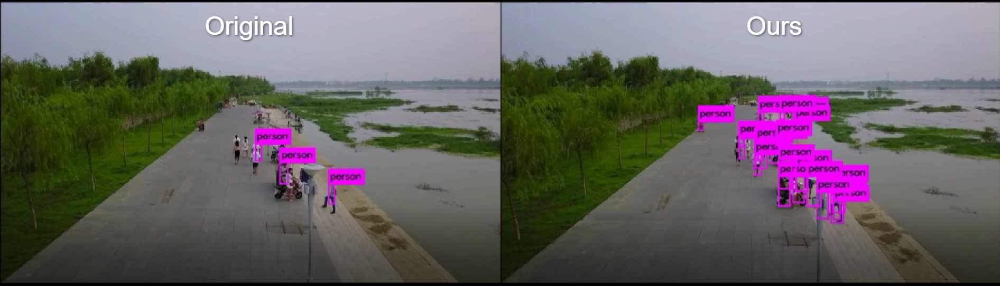

| Summary | AI engine develop for missing person isolated place (KSA Program) |
| Details | AI engine develop for Drone mounted mini GPU & Searching algorithm improve |
| Program | Industrial Convergence AI Youth-innovator raise Program |
| Duration | 6month(`19.06 ~`19.11) |
| Accomplishment | Co-working Company(Rainbow Lab) used missing person search algorithm |
| demo |
| Summary | Rubber based Pad Printting result prediction Tool develop |
| Details | For 3 inputs (Printing Pattern, Pad shape, Object shape) get 1 output (printing result) engine develop |
| Company | YDTC AI Lab (Gyeongbuk institute of IT Convergence Industry Technilogy Project) |
| Duration | 6month (`21.07 ~`22.12) |
| Accomplishment | Project get good evaluated , accuracy 80% achievement |
| demo |  |
| Summary | AI based Rubber product inspection machine develop |
| Details | Rule-based inspection not suitable for Rubber product, so sort out with AI based Rubber product inspection machine develop |
| Company | YDTC AI Lab(Ministry of SMEs and Startups Project ) |
| Duration | 1 year(`21.07 ~`22.07) |
| Accomplishment | recall: 96%, accuracy : 90% |
| demo | 이미지 |